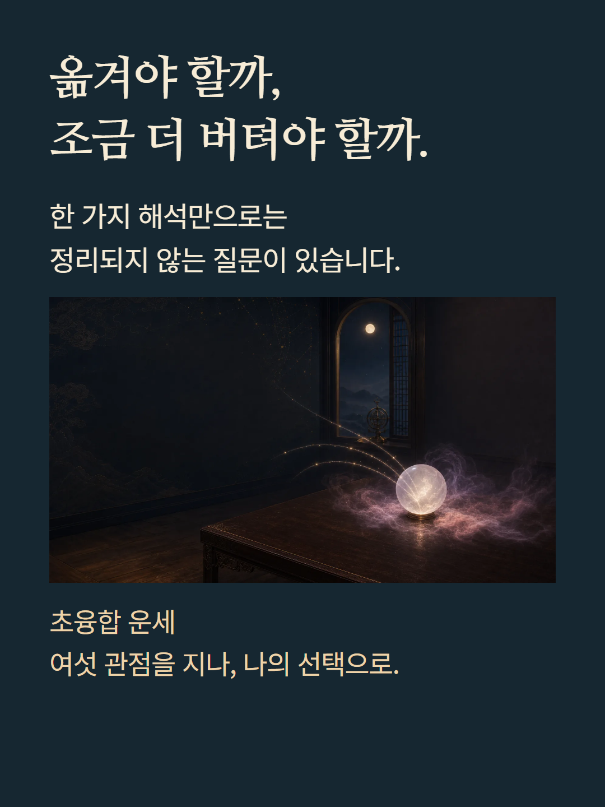
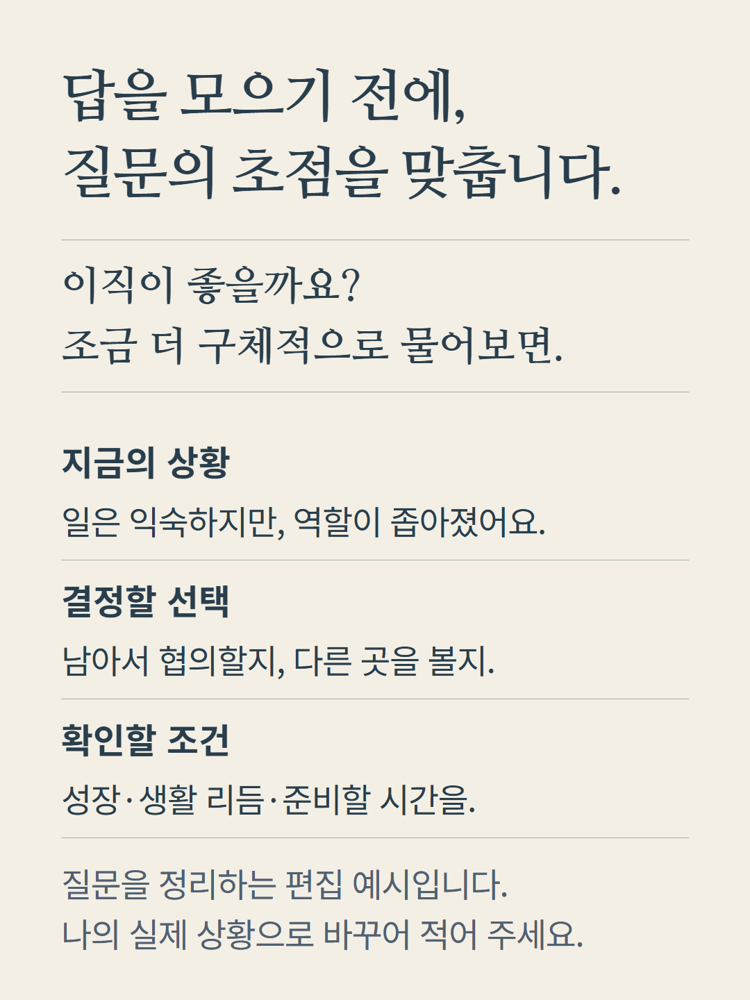
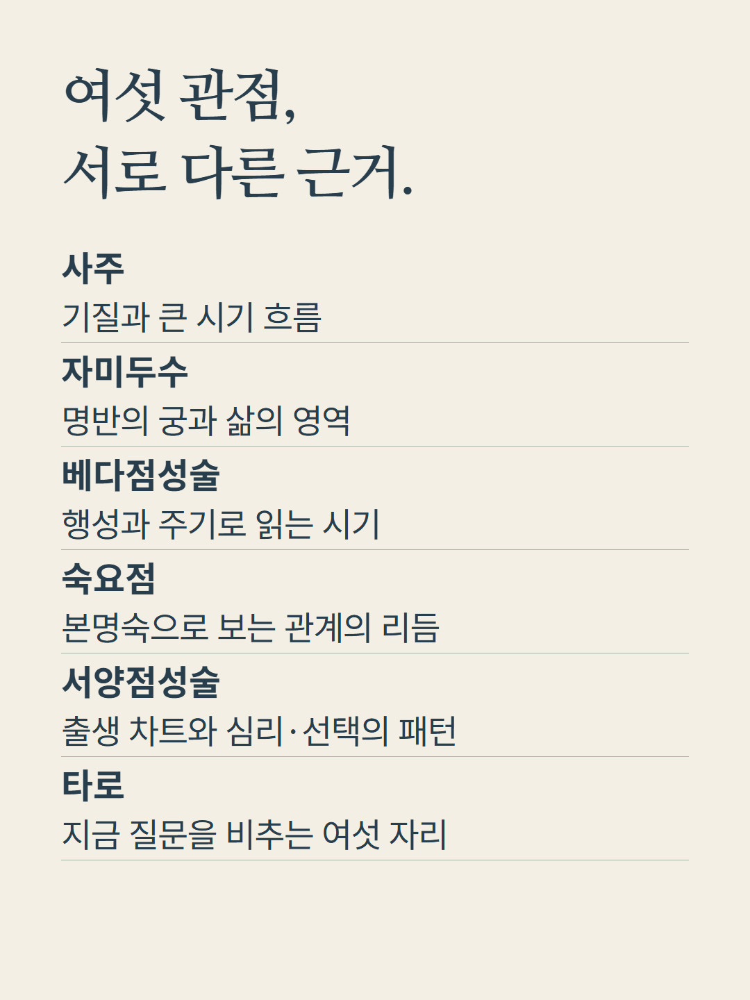
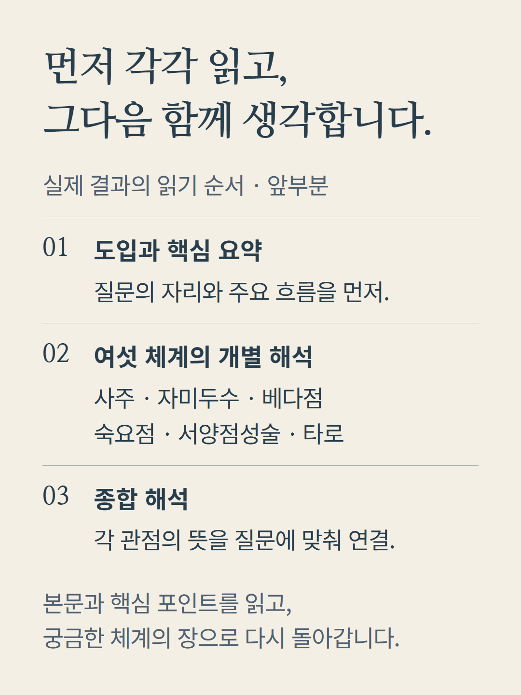
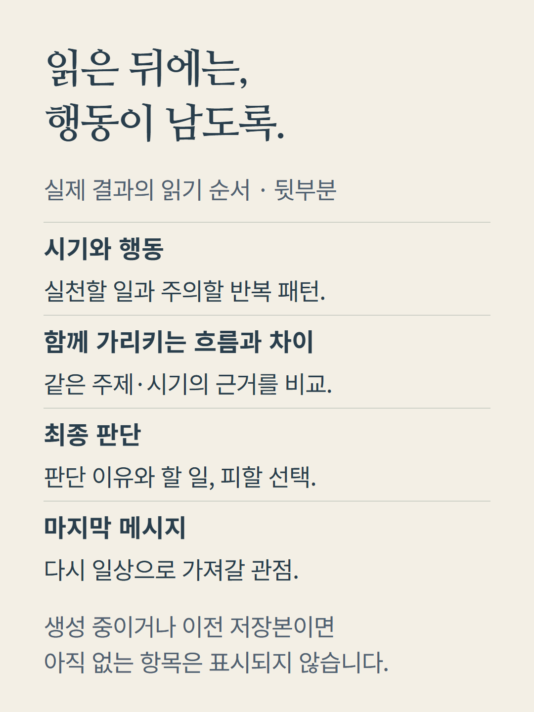
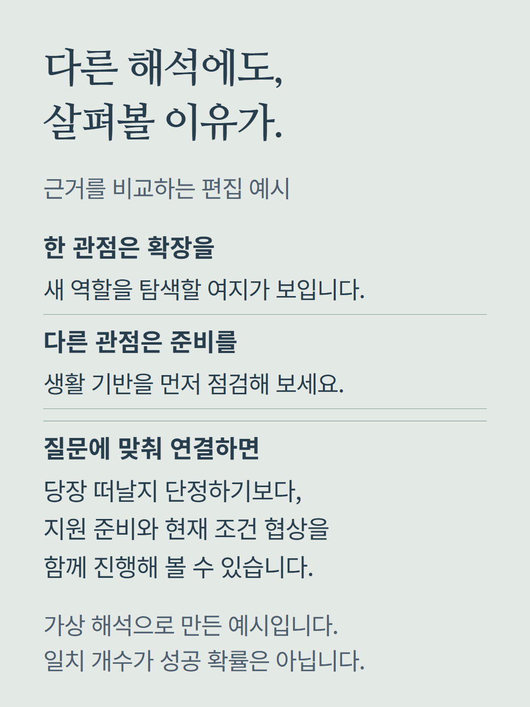
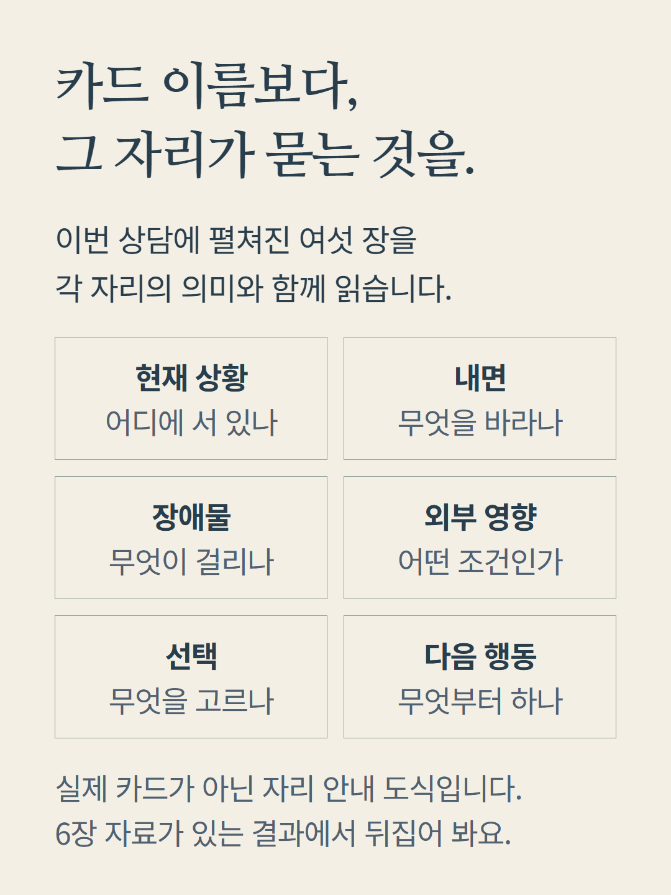
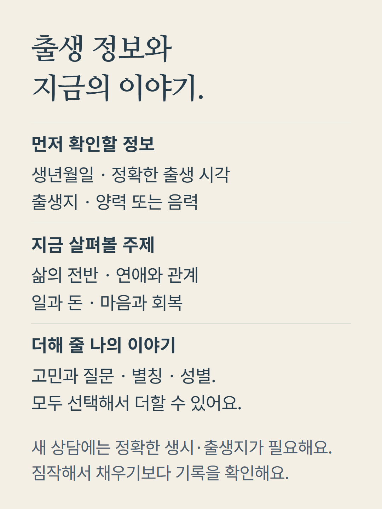
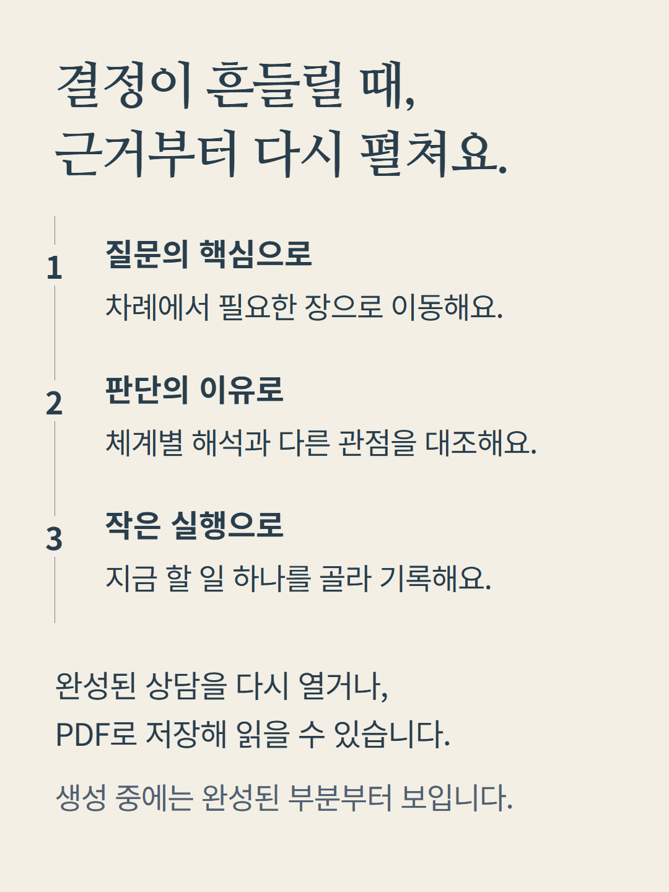
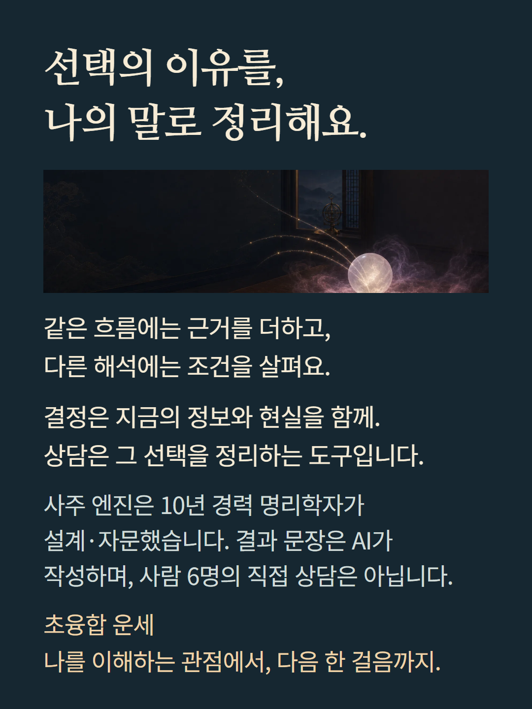

결과의 여섯 체계별 해석과 종합·시기·행동 구조를 안내합니다. 받은 내용이 있는 항목부터 표시되며, 근거 비교는 같은 주제와 시기에 비교 가능한 자료가 있을 때 구성됩니다. 도식과 상담 문장은 이해를 돕기 위한 편집 예시로 실제 고객 결과가 아닙니다. 체계 간 일치나 화면의 수치는 성공 확률 또는 정확도 인증이 아닙니다. 결과 문장은 AI가 작성하며, 여섯 명의 사람이 직접 상담하는 상품이 아닙니다.